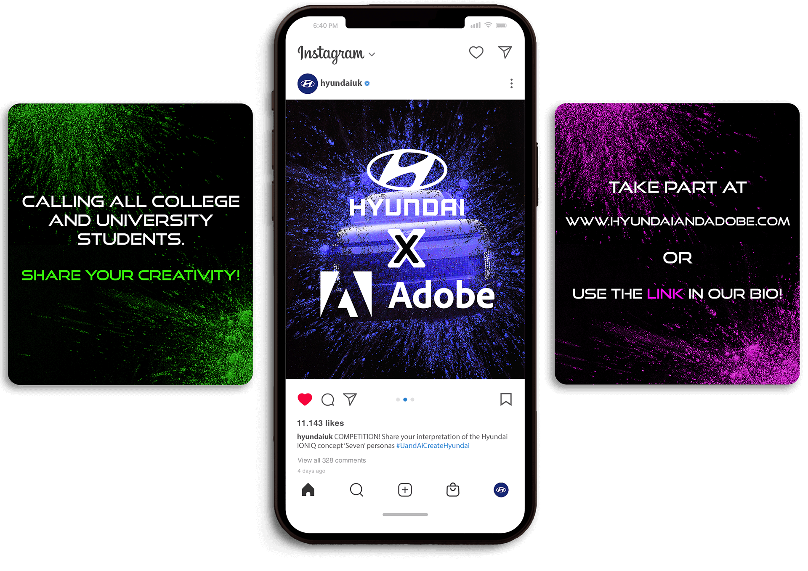
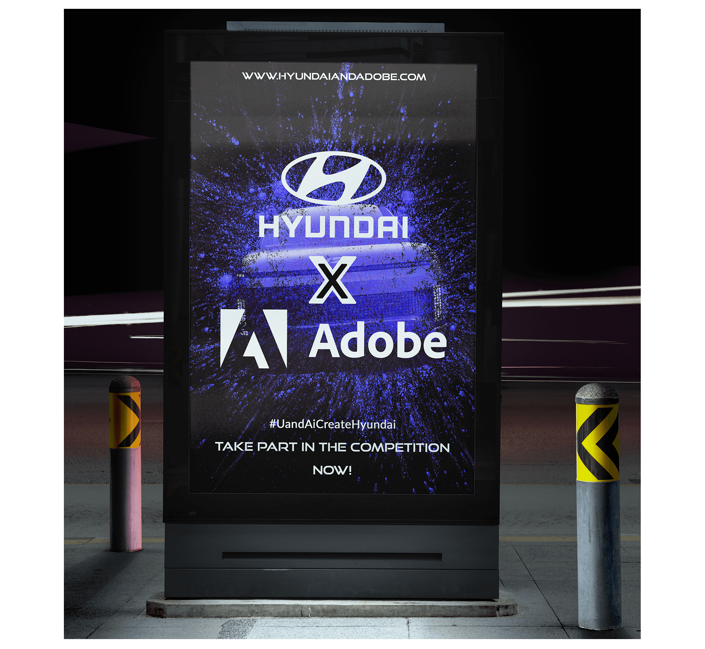

Hyundai x Adobe
Problem: Gen-Z care about everyone having the chance to be who they are in
their lives.
Insight: Gen-Z finds it easier to be themselves when taking on a persona.
Solution: Allow Gen-Z to express themselves through the future of Hyundai.
| Client: | Hyundai |
| Status: | Idea |
A competition by Hyundai and Adobe for UK College and University students, enabling them to share their interpretation of the Hyundai IONIQ concept ‘Seven’ personas.
The competition is split into 2 briefs; ‘The Car Livery’ and ‘The Hyundai Showroom’.
The competition would be conducted virtually, putting emphasis on the Adobe software.
Students submit designs answering one brief and choosing one of three personas listed below.
- The Organised Thinker
- The Sustainable Futurist
- The Rugged Creative
The winners from each category (25 selected per brief) would be invited to Hyundai centres to create
their designs. Hyundai would cover the cost of travel and accommodation. The winners receive a
monetary reward and a unique 25% discount off buying their first Hyundai car.
After the competition the cars would be exhibited in Hyundai dealerships across the UK bringing
colour into the dealerships. A zine containing the designs of the winners and shortlisted
participants would be available to buy in showrooms. The profits would go towards the creative
departments of the winners Universities.
Stage 1 - Promoting The Competition
The competition would be announced on socials such as Instagram and TikTok, to meet Gen-Z where they are comfortable.
OOH ads such as billboards would be displayed throughout the UK near Colleges and Universities that are eligible to take part.
People at Universities would hand out fliers and putting them in University accommodation letter boxes. The fliers would have all the information about how to take part in the competition on the back to make the process of taking part easier. Unlike OOH they don't have to go to a webstie to find out, meaning it removes a step for them to take part increasing the chances that they will.
Participants would be encouraged to share their design process as they go along on TikTok and other social media platforms using the #UandAiCreateHyundai.
Stage 2 - Sharing The Winning Designs
After the competition the final designs would be used in a global campaign to market the new colourful face of Hyundai. Hyundai would document and share the winning designs and the winners event on social media platforms such as Instagram, TikTok and Facebook.
There would be billboards near the dealerships announcing the unique car designs and interior designs to be viewed.
Students would be encouraged to share the process of making their designs on social media such as videos on TikTok. This would also provide a behind the scenes look at how Hyundai works, hopefully instilling trust in the viewers mind about the brand.

The zine containing the designs of the winners and shortlisted participants would be given to the winners as something to take away from the competition, as well as a way for them to spread the word and share with their friends and family what the future of Hyundai looks like. To give back to the community, the zine would also be sold at Hyundai dealerships with the proceeds going towards the creative departments of the winners Universities.